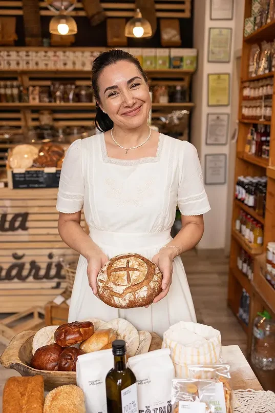
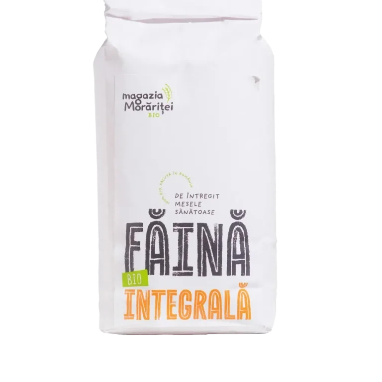
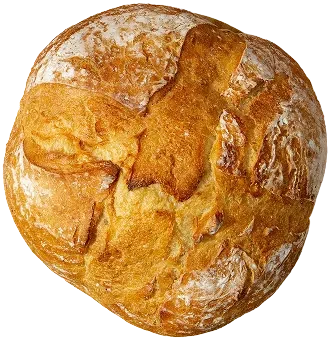
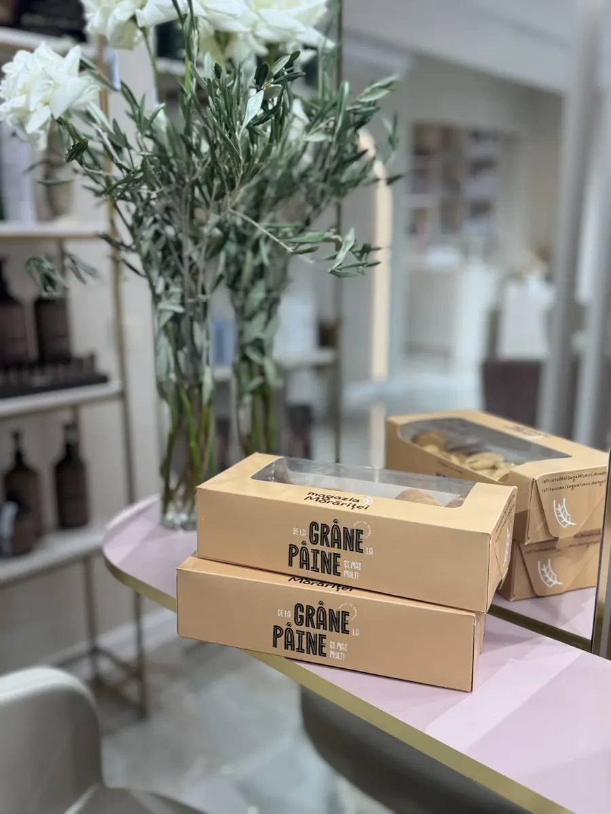
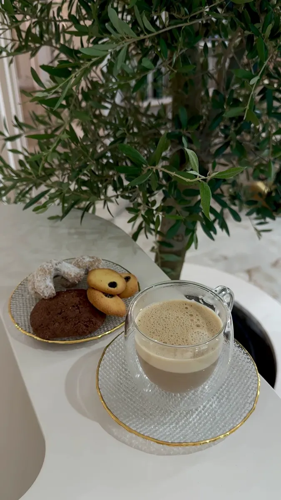
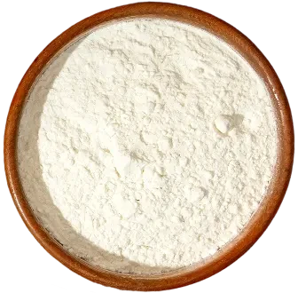
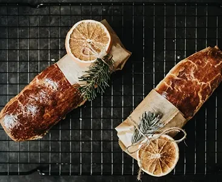
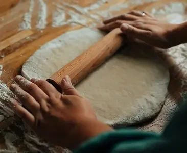
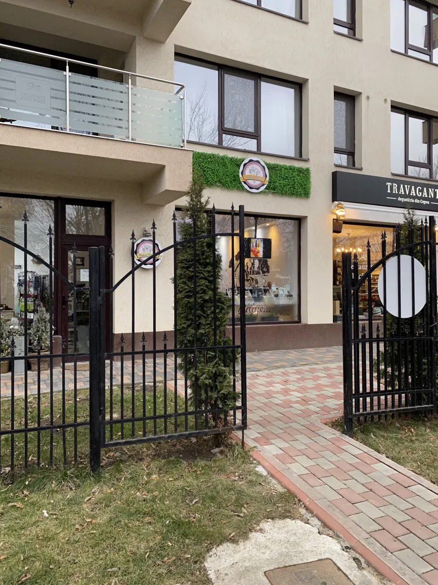

Făină intermediară
5,00lei
Pâine cu maia coaptă pe vatră cu lemne, din făina morii noastre de la Probota. Brutărie și băcănie pe Șoseaua Sărărie A14.
★ 4,5 · 74 recenzii GoogleÎnchide la 19 · program de confirmatBIO · RO ECO027

În anii ’90, tatăl Ceciliei a ridicat, cărămidă cu cărămidă, prima moară de grâu și porumb din comuna Probota, la vreo 30 de kilometri de Iași. Apoi a venit presa de ulei de floarea-soarelui presat la rece. Visul lui a fost dintotdeauna o brutărie. Astăzi, fiica morarului îl duce mai departe.
„Ne producem făina, iar mai departe urmăm o rețetă simplă, cu apă, făină și sare.”
Cecilia Țugulia, pentru Capital.ro, ianuarie 2026
Moara de grâu și de porumb, ridicată de tatăl Ceciliei în comuna Probota. Familia lucrează alături de el.
Într-o coastă a morii, într-un garaj vechi, familia clădește cuptorul pe vatră. Pornește brutăria.
În februarie se deschide magazinul din Iași: pâine artizanală și produse românești din serii mici.
Pâinea cu maia primește atestatul de produs tradițional, primul din județul Iași.
Certificat ecologic și pentru o parte din pâine: făina și uleiul sunt ale lor. Moara e primul producător de făină certificat ecologic din județ.
Surse: StartupCafe.ro (2022) și Capital.ro (2026).
Măcinată la Probota, certificată ecologic. Prețurile sunt cele de pe magaziamoraritei.ro.
5,00lei

7,00lei
7,50lei
8,50lei
9,00lei10,00
18,00lei
presat la receGramajul fiecărui sac: de confirmat cu magazinul.
Gama după Capital.ro (2026) și StartupCafe.ro (2022). Ce e azi pe raft: vezi mai jos.




Brutăria postează zilnic ce a scos din vatră. Aici, aceeași poză din WhatsApp sau Instagram devine o tablă pe site: știi ce găsești înainte să pleci spre Sărărie.
Un mesaj scurt, cum se scrie deja pe grupul echipei. Asistentul îl transformă în rânduri pe tablă și în postarea zilei. Nimeni nu intră în panoul site-ului.
Orele și produsele de pe tablă sunt exemple, nu stocul real.
Grâu și porumb măcinate la Probota. Primul producător de făină certificat ecologic din județul Iași.
Pâinea cu maia dospește și se coace pe vatră cu lemne, lângă moară.
Raftul din Sărărie, pe drumul spre Copou: pâine, făină, ulei și produse românești din serii mici.
Schemă, nu la scară. Surse: Capital.ro (2026), StartupCafe.ro (2022).
Alegi ziua în care treci pe la magazie. Pâinea cu maia te așteaptă pe numele tău. Rezervarea pleacă pe WhatsApp, iar brutăria îți confirmă.
Alegi ce vrei de pe masa de sărbătoare, câte bucăți și ziua în care treci pe la magazia din Sărărie A14. Comanda pleacă pe WhatsApp, iar brutăria îți confirmă prețul și ora.

Făină bună, ouă, nucă și răbdare. Rețeta din jurnalul magaziei.

Împletiți ca pentru hram, așa cum îi făcea bunica.
Turtă dulce de la magazie, pentru masa de sărbătoare.
Sensul general al recenziilor publice de pe profilul Google, consultat pe 19 octombrie 2026.
